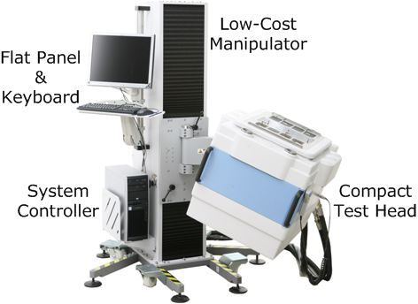

Compact test head system
The HSM Series CTH test system is intended for design verification (DV) and low-volume manufacturing (LVM). The CTH can be mounted on an engineering cart or on a low cost manipulator (E6979LC). The system shown in the figure below includes the optional low-cost manipulator.

The CTH HSM system comprises:
- The compact test head (CTH), shown in the forefront of the figure above, is the heart of the system. It houses all channel electronics and the device power supplies (DPS). It also provides primary power distribution and houses the primary power power supplies (AC/DC) as well as the secondary power supplies (DC/DC) that distribute power to the individual boards. All electronic parts inside the test head are water cooled.
- The low-cost manipulator, shown in the background, carries the test head and lets you move and position it easily. The manipulator is equipped with brackets to hold the system controller, keyboard and flat screen monitor.
- The cooling unit, (not shown in the figure above) circulates water through the test head to cool the channel electronics and the power supplies. One cooling unit can support up to four compact test heads.
- The system controller is a high-end PC that runs the test software and communicates with the test system over a fiber-optic link. The operating system is Linux.
For engineering applications, the Compact Test Head can be mounted on an Engineering Cart.
The HSM Series CTH test solution is focused on the current and the next generation memory devices. It provides the following features:
- Exploit modular per-pin concept (maximum of two card-cages)
- 16 slots for channel cards
- Up to 2 AC/DC power supplies
- Max. of 512 pins @ 3.6Gbps
- Engineering cart or low-cost manipulator (optional)
- Application examples
- Failure analysis (FA) and quality assurance (QA) in production
- Engineering and characterization for design verification (DV)
- Low-volume manufacturing (LVM)
This system is based on the V93000 low cost infrastructure (LCI) test system. See LCI System Overview in the CTH Site Planning and Preparation Guide for more information.
Note The CTH platform system as described in the above referenced guide has some
additional capabilities that are not available for HSM Series systems. For example, an HSM Series
CTH system does not support RF and analog cards. The HSM Series CTH system is available with the
high-performance workstation (XW8x00 Series) only.
CAUTION Do not use the heavy (more than 50 kg) test fixture on the compact test head
or on any test head without internal reinforcement.
Functional changes
- Introduced before SmarTest 6.3.2